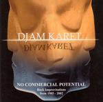

| Artist: | Djam Karet |
| Title: | No Commercial Potential |
| Label: | Djam Karet Productions |
| Length(s): | 58+55 minutes |
| Year(s) of release: | 2004 |
| Month of review: | [04/2005] |
| 1) | Where L. Ron??!! | 16.52 |
| 2) | Dwarf Toss | 11.16 |
| 3) | Blue Fred | 29.42 |
Disc 2:
| 1) | The Building | 20.03 |
| 2) | The Door | 7.56 |
| 3) | The Window | 27.22 |
This first disc is from 1985, although sonically I am not able to to tell. Everything sounds clear in the instrumental mix that we obtain here. The first track is Where's L. Ron??!! (hope the scientology people do not mind), which opens with the tinkling of bells, slowly gaining in sound as the drummer chimes in, and the guitarist adds his occasional outbursts. Instead of the stark atmospheric guitar instrumental music, this is more of an extended jam groove with the bass rumbling beneath the guitar going over and plenty of drive from the drummer.
With Dwarf Toss (not to be confused with Broadcast) sounds indeed more stark. The guitar grooves a bit less, and meanders a bit more. It does have a very American twang to it. After four minutes or so, the music becomes louder and a bit more hectic. Here the Crimson influences comes through (although to be honest, this being a record from 1985, it shows more the direction Crimson was going to take). It is pretty obvious that this is improvisation. The melody is not that important, and those that exist are not striking. This, to me, is often the downside of improvisations. It does show development of a musical idea 'on-line'. The final part nicely rolls along, with Oken hammering away and things getting more urgent.
Halfway through disc one, we still have one track to go. Blue Fred opens with lone cymbals. This a rather relaxed track, at least the first fourth. The pace does set in after a time, chugging like a train, with a prominent bass in the middle part. In the final part the winds down again, and we are back to the lone cymbals. The guitar noodles in the back, the bass zooms, the guitar reverberates, while the end it shines in a guitar solo.
Over to the more recent disc two, and the question is: has anything changed. Well, it opens with keyboards it seems, and I did not spot any of these on the previous cd. Although of the improv sort, it does lend some softness and melody to the picture. The music is more atmospheric here, more subdued. This music talks to me more than the music on disc one. There is more feeling, more tension. The likeness to Fripp's soundscapes is quite striking, even though there is a bass present. No drums as yet. There are plenty of effects, and more melody. At halftime do the drums set in, and the guitars play a sensitive lead. Louder and louder the music gets. It is clear that this has been recorded later than disc one. The final part is of the more meandering kind, albeit one which shows a groove.
The Door even has some spoken words mixed in, and instrumentally follows the same track as the previous track, although more in e-bow style, long stretched notes, rather eerie material this. Not a door that I would willingly pass through if encountered. The ghost of the Crim is not far away here, and plenty of keyboards (however they may be triggered).
The final track is again the longest of the disc and is called The Window. I wonder if the spoken words are actually part of the jam. Dark impressionistic tones dominate here for another Fripp inspired Soundscape. The keyboards material comes close to cosmic EM and there is not much that reminds of a guitar (not more than on any modern EM record). Aha, round the eight minute mark we enter ProjeKCt Two Space Groovy territory. The drums sound modern, very tight, the keyboards melt into the sharper sound of guitars. But in case you missed it, the groove has returned, and we are building up to something. The rock continues to be with us to the end, including some rowdy, bluesy licks at the very end, accompanied by an unsettling guitar playing in the shadow. Very good. I would not mind hearing more of these climaxes.